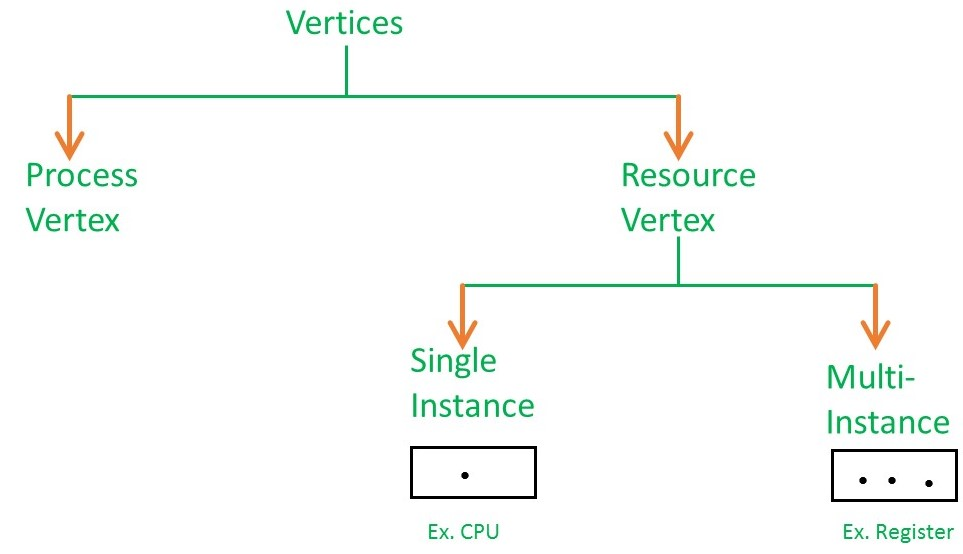

VERTICES IN RAG
Vertices are mainly two types, resource and process.each of them will be represented by a different shape.circle representes process while rectangle representes resource.
TYPES OF VERTICES IN RAG

A resource can have more than one instance. Each instance will be represented by a dot inside the rectangle.